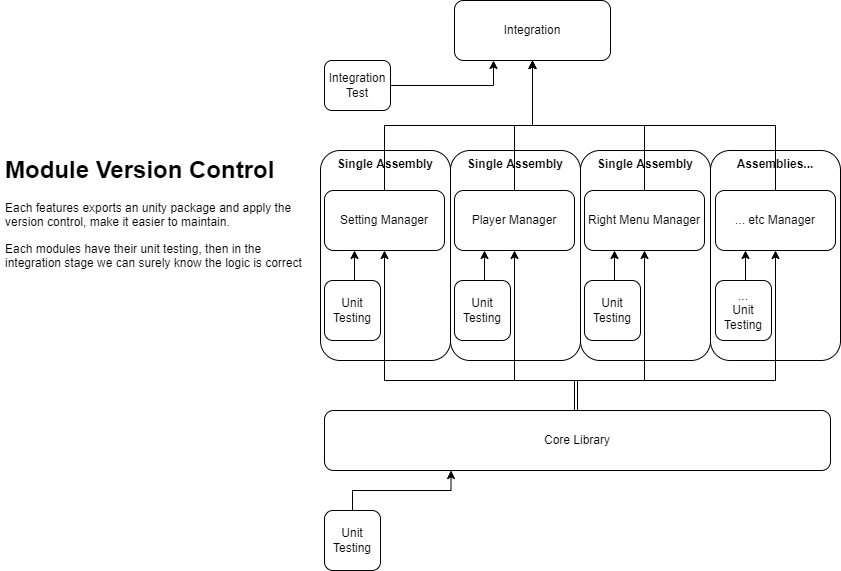

架設
在這一篇中, 你可以了解專案架構
第三方工具幫助
架構

這是主要的專案架構
統整(Integration) (主要邏輯) 會保存在 /Assets/Scripts
模組(Modules) (通用邏輯) 會保存在 /Assets/FuniquePlugin/[Module Name]
媒體, 巨大檔案(忽略元件) 會保存在 /Assets/FuniqueAssets
這樣可以確保
模組的載入行為批次檔案都會在根目錄

Warning
當專案的依賴性改變之時, 便要手動更改根目錄批次檔案, 否則下一個人將會下載錯誤的依賴模組.
依賴性
每個模組都會有他的依賴性, 這些東西都會寫在模組的 readme.md 上